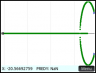
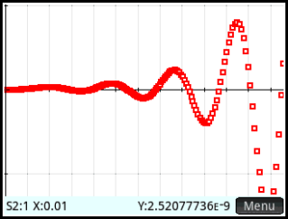

+- HP Forums (http://www.hpmuseum.org/forum)
+-- Forum: HP Calculators (and very old HP Computers) (/forum-3.html)
+--- Forum: HP Prime (/forum-5.html)
+--- Thread: Bode/Root Locus/Nyquist/Nichols...App{update 10AUG2016} (/thread-3891.html)
Bode/Root Locus/Nyquist/Nichols...App{update 10AUG2016} - toshk - 05-18-2015 05:27 AM
Bode/Nyquist/RootLocus/Nichols/ with "Delay response" /Step Response/Ramp Response...App
with controls...and more functionality/Robust. enjoy!!! Report bugs.
fixed issues at the poles: example BODE(0.01,100,[1 ],[1 0 1] error::
fixed issues with Step/Ramp plots: example BODE(0.01,100,[1 ],[1 0 .3 5 8 .23 1] error
With Root Locus now
Optional enter gain value for Root Locus plot... G:=Gain Value of Interest
Optional plot S2 to unwrap phase in phase plot and Nichols plot
first time installing:: may need to recompile the Bode Plot(App).
>>App>>Bode Plot>>Shift>>1>>Bode plot(App)>>Check
Frequency response plots corresponding to G =
s + 2
-----------
3s^2 + 4s + 5
BODE(ƒ1,ƒ2,[numerator],[denominator]) enter.
ƒ1 to ƒ2 (rad/s) is the frequency range you are interested.
BODE(0.01,100,[1 2],[3 4 5]) >>Enter.
ALWAYS:
Use >>VIEW from [HOME SCREEN] for Plot selections >>Plot
>>VIEW>>START/Info to refresh Bode APP parameters.
BodeMag;
BodePhase;

Root Locus;
Step Response@ t=1;
Ramp Response @t=1;
Nyquist Plot;
Delay Response @t=1;
(1/(s^4+2*s^3+3*s^2+4*s+5))
[BODE(0.01,100,[1],[1,2,3,4,5]))